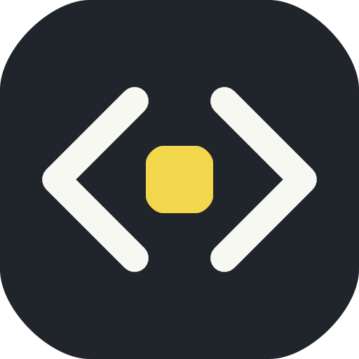
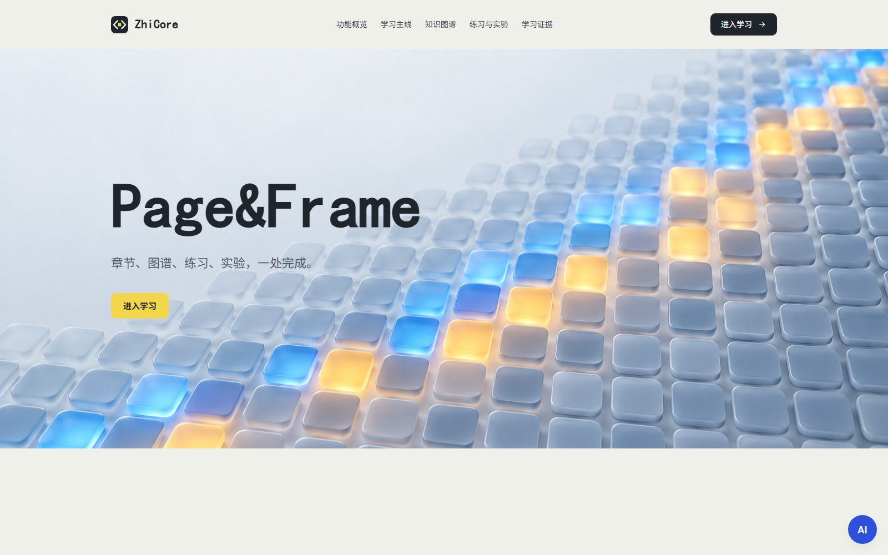
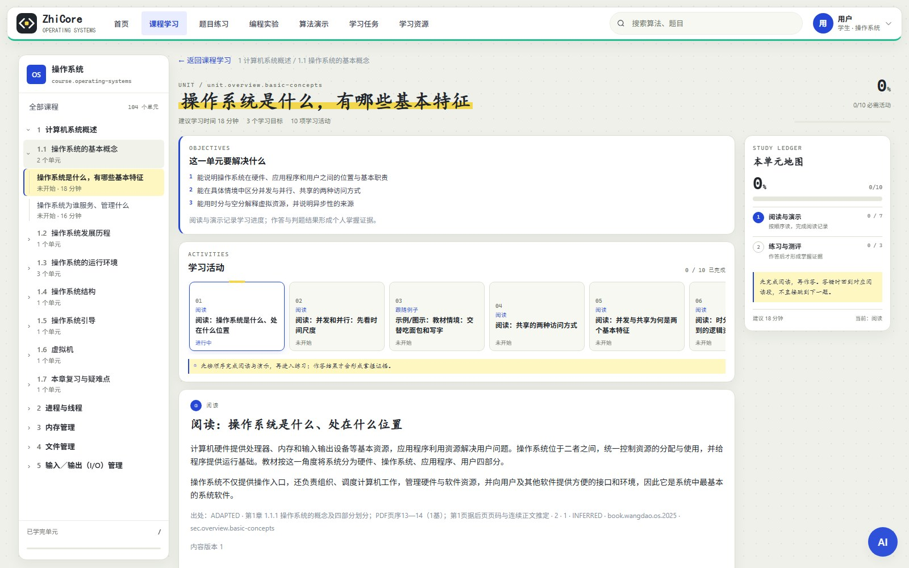
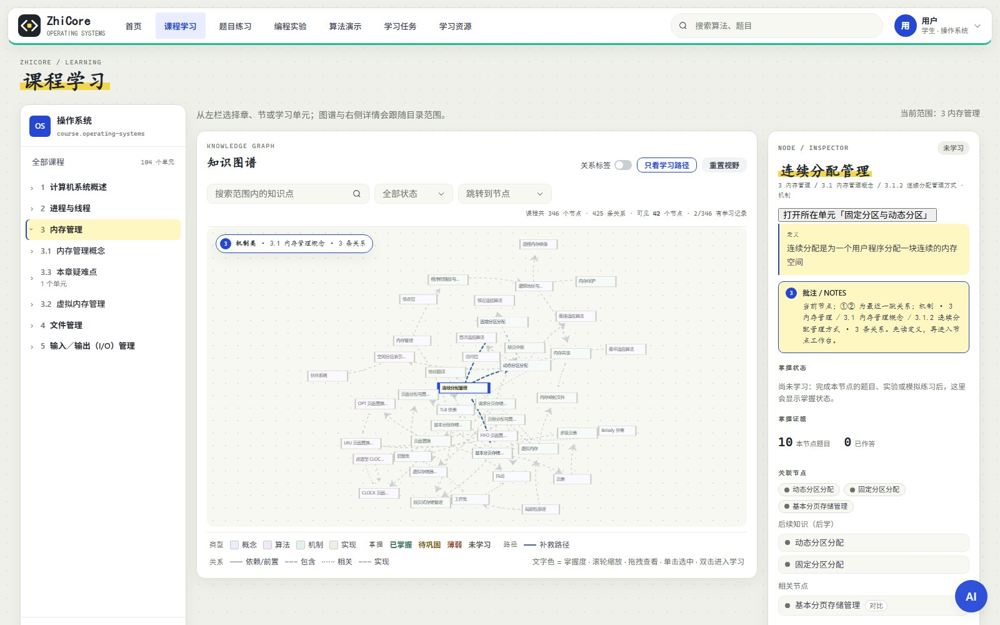
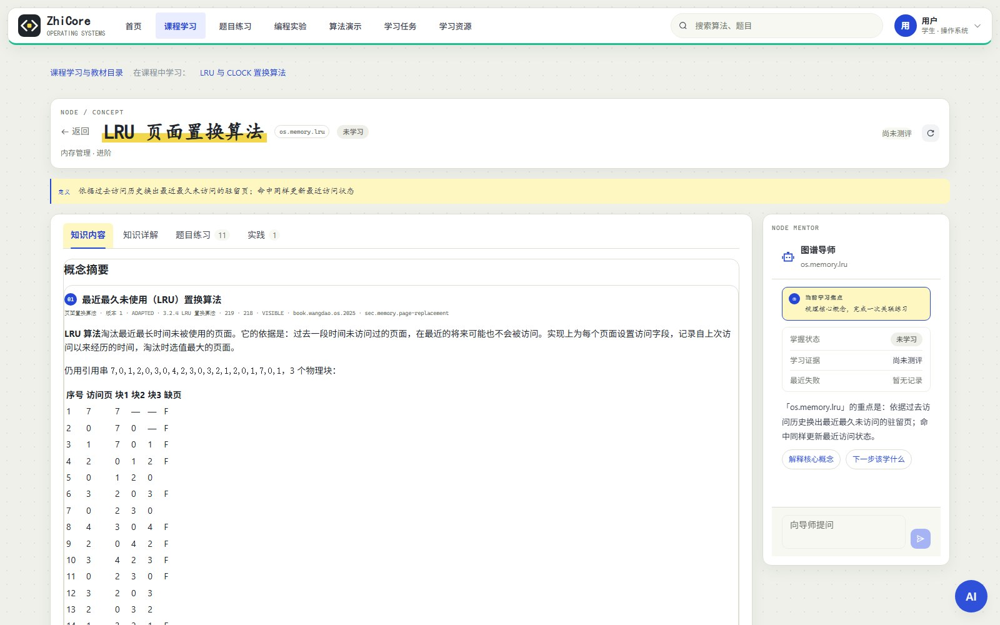
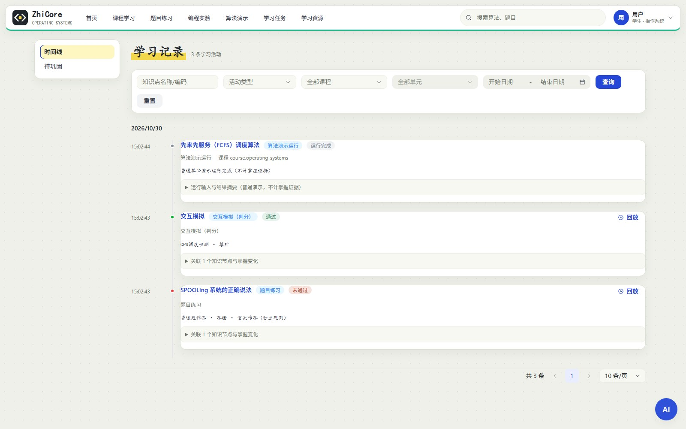
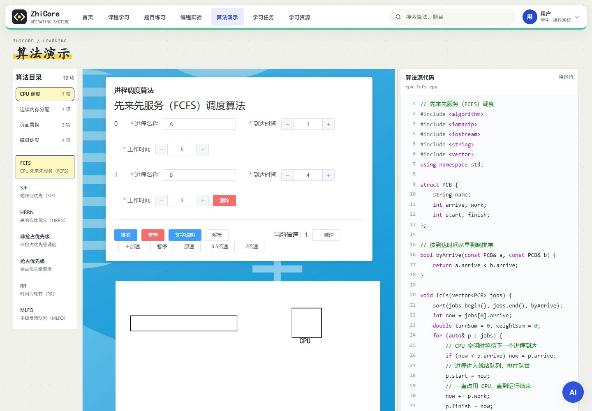
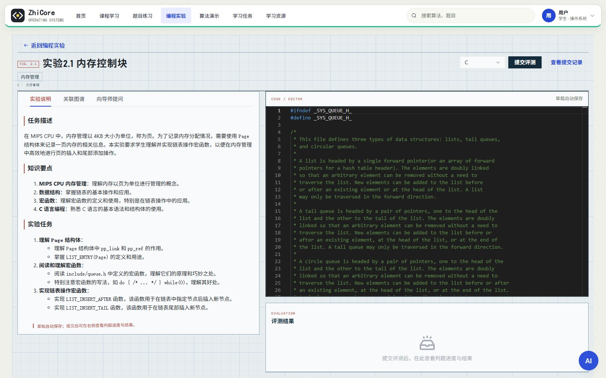

ZhiCore 面向操作系统课程，把教材目录、知识图谱、练习、实验、教师任务与学习记录组织成一条可解释、可回放的学习闭环；AI 导师在需要时提供有出处的解释与定位。

ZhiCore 面向操作系统课程，以教材目录组织学习主线，以知识图谱连接概念，以学习事件形成证据；AI 导师在关键处解释与定位，但不替代判分和掌握模型。
五章目录、104 个学习单元、261 个教学块、916 道题，按教材顺序编排；教师发布快照后，学生才看到新内容。
节点导师回答“这个概念是什么、我为什么错、下一步学什么”；实验导师读取当前代码、语言与最近判题结果，给提示与定位，不直接代写完整答案。
首次独立作答、判题与模拟预测写入不可变事件账本，驱动概念 / 实践双维 BKT 与个人图谱；AI 不写掌握状态。
教材告诉学生“先学什么”，图谱告诉学生“为什么”，证据告诉学生“现在怎么样”。
AI 把这三件事解释成学生听得懂的话；判分、归因、路径与掌握状态全部由确定性规则计算。
课程小节
教材教学块
题目—节点映射
图谱节点 / 关系
数据来自当前五章脱敏部署包；节点同时包含课程注册节点与历史图谱节点。
操作系统课程概念多、机制抽象、实验链路长。ZhiCore 把“教材怎么读、知识怎么连、练习怎么做、结果怎么解释”放在同一条学习主线里。
学生知道有这些资源，却不知道当前章节该读哪一块、做哪道题、跑哪个演示，下一次回来也找不到位置。
一次作答、一次判题、一次模拟预测，如果不能映射到稳定知识节点，就无法形成可解释的个人画像。
回答看起来合理，却无法确认依据来自哪段教材、哪条图谱关系、哪次本人证据，也无法保证不误改学习状态。
教师需要的是从内容到班级的连续工作流，而不是多个互不相通的编辑页面。
学生端与教师端共用同一套课程、节点、题目和事件数据；不复制题库，也不为任务另建一套掌握模型。
活动进度回答“我有没有完成阅读、演示或任务”；掌握证据回答“我是否在独立条件下做对 / 做错”。两者使用不同表、不同写入条件，避免“点一下完成”就变成“已掌握”。
概念侧由 ATTEMPT 驱动，实践侧由 JUDGE / SIMULATION 驱动；综合掌握度使用 BKT 后验更新。
| 状态 | 规则 |
|---|---|
| GRAY | 没有独立证据 |
| RED | pKnown < 0.35 |
| YELLOW | 0.35 ≤ pKnown < 0.70，或缺少一类证据 |
| GREEN | pKnown ≥ 0.70 且概念 + 实践两类证据齐全 |
默认参数：pInit=0.10、pLearn=0.10、pGuess=0.20、pSlip=0.10；规则可复算，不依赖外部模型。
左侧目录定位，右侧显示真实活动进度；中部先给可检查目标，再按阅读 → 例子 → 练习 → 实验的顺序推进。只有真实作答 / 提交才能推进需要证据的活动。

目标写成学生可完成的任务，而不是“了解 / 熟悉”这类不可验证描述。
阅读、例子、演示、练习、实验、小结按顺序排列，必做项单独统计。
从题目、实验或演示返回时保留单元、活动与模式，继续学习不丢位置。
六个亮点共同回答一个问题：AI 如何真正进入学习过程，而不是停留在“问答演示”。
五章目录、104 个学习单元、261 个教学块、916 道题，按教材顺序编排；教师发布快照后，学生才看到新内容。
关键词：publishedJson · 课程目录 · 活动引用的资源复用
概念 / 实践双维 BKT、幂等事件账本、完整前后快照、历史回放；重复作答只记行为，不重复更新模型。AI 只解释，不写掌握状态。
关键词：idempotencyKey · 不可变账本 · GREEN 双证据
节点导师解释概念、错因与下一步；实验导师读取当前代码、语言与最近判题结果，先定位再解释。回答只引用本次检索来源，无证据时明确降级。
关键词：受控上下文 · 编号引用 · 无证据降级 · 不代写完整代码
18 项 CPU / 分配 / 页面 / 磁盘算法保留原动画时间轴，右侧展示 C++11 教学源码；Babel 注入的语义标记让步骤与代码行同步。
关键词：legacy SpriteJS · @trace 标记 · 代码行高亮
操作系统实验统一使用 C 语言；每次提交进入无网络、只读根文件系统、非 root、受限资源的临时 Worker；编译错误、运行错误、超时与系统故障分别归类。
关键词：Docker sandbox · 终态判题 · 诊断事件不降掌握
内容导入 / 审核 / 发布，任务组合与执行副本，班级发布、轮次提交、人工批阅、班级热力与节点下钻。
关键词：执行副本 · 轮次 · 自动 + 人工评分
| 维度 | 普通 AI 聊天 | ZhiCore |
|---|---|---|
| 回答依据 | 模型通用知识，难以追溯 | 已发布教材块 + 节点邻接 + 本人证据 |
| 实验上下文 | 需要学生手工粘贴代码 | 实验导师自动打包代码 / 语言 / 最近判题结果 |
| 状态更新 | 无法验证，容易“说会了” | AI 不写掌握，事件驱动 BKT |
| 结果复算 | 不可复算 | 确定性规则 + 幂等键 + 快照回放 |
两个入口共用同一个 GraphRAG 服务，但上下文打包完全不同：节点导师解决“概念与路径”，实验导师解决“这段代码为什么错”。
种子节点 + 一跳关系 + 本人学习事件 + 已发布教材块 + 题目 / 实验 + 可执行下一步。回答先定位“看哪一块 / 哪道题 / 哪条记录”，再解释。
节点不存在直接报错；只查当前用户；不输出完整实验答案或整段可提交代码。
自动打包实验标题 / ID、关联节点、当前语言、代码片段（最多 1200 字符）、最近提交状态与判题消息；要求学生补充问题，再给提示、定位与修改建议。
会话按“用户 + 实验”隔离保存在本地；发送中切换实验会丢弃旧响应；可清空、重试、跳转来源。
| 指标 | 实现 |
|---|---|
| 模型 | DeepSeek 官方 API 平台 · deepseek v4.1（base URL / model 可配置） |
| 来源上限 | MAX_SOURCES = 8；按意图分配事件 / 教材 / 题目 / 实验 / 路径配额 |
| 回答模式 | AI 或 FALLBACK，前端明确标识 |
| 限流 | 导师提问：同一用户 1 分钟最多 6 次；通用问答：1 分钟最多 10 次 |
ZhiCore 的 AI 能力被设计成“可验证的窄接口”：AI 只生成自然语言，不拥有判分、掌握度或学习状态的写权限。这样既能发挥大模型的解释能力，也能用确定性测试守住教学质量。
题目判分、BKT 更新、失败归因、学习路径、活动完成判定全部是确定性函数；相同输入必然得到相同输出。
GraphRAG 输出“答案 + 引用来源 + 检索轨迹”；没有证据时明确说“不足以判断”；模型失败 / 未配置密钥时回退规则回答。
| 上下文 / 风险 | 处理与测试 |
|---|---|
| 代码片段 | 只取当前语言代码，截断到 1200 字符；空代码传“当前代码为空”；提示词要求“不直接输出完整可提交代码”。 |
| 判题上下文 | 带入最近提交状态与判题消息；判题中 / 未提交分别标注；不把系统错误当成学生知识失败。 |
| 会话隔离 | localStorage key = 用户 ID + 实验 ID；只保留最近 50 条；切换实验 / 卸载时旧请求令牌失效，迟到响应不写入。 |
| 来源与降级 | 回答来源可跳转节点、题目、实验与事件；模型失败显示可重试错误，规则降级仍返回证据卡。 |
测试断言只检查来源集合、引用序号、节点范围、用户隔离、无证据行为与降级路径，不检查某一句自然语言；这样模型升级或更换供应商时，教学契约仍然稳定。
用 AI 辅助枚举大图 / 窄屏 / 空数据 / 幂等重试 / 判题失败等容易遗漏的路径。
用浏览器自动化进入真实页面，查看控制台、网络与渲染，定位“空白页 / 错乱高亮”等 UI 回归。
把复现步骤固化为 Node / JUnit 测试；AI 只负责提出假设，是否通过由脚本判定。
算法真值、图谱碰撞、C++ 参考输出、构建与 lint 共同构成合并前门禁。
| 测试层 | 覆盖内容 | 最近一次本地结果 |
|---|---|---|
| 算法与动画 | 18 项算法真值 + 18 个原版 Vue 2 算法、SpriteJS 时间轴与回调身份 | 18 / 18 通过 |
| 图谱渲染 | 150 / 185 节点、章节布局、缩放、标签避让、关系开关、筛选、窄屏 | 28 项通过 |
| C++ / 播放器 | 18 份 C++17 参考程序 + 18 份 C++11 教学源码；播放器状态机与代码行映射 | 119 次执行 + 20 项通过 |
| 后端模块 | BKT、事件幂等、题目范围、任务、课程发布、AI 导师来源与降级 | 50+ 测试类 |
| 构建 / 可访问性 | TypeScript / lint、设计令牌、键盘焦点、响应式布局 | 持续门禁 |
结果来自项目本地确定性测试脚本；不以 AI 生成的文字替代断言，也不把“页面能打开”当作“学习结果正确”。
学习记录页曾出现“活动表未迁移时整页系统错误”，以及模板调用未定义函数导致“有数据但整页空白”。
后端启动幂等建表 + 单来源容错；前端活动接口失败回退到事件时间线；补上活动类型别名并用浏览器复核卡片渲染。
前端保持学习工作区的轻量与可访问，后端把课程、证据、任务和判题拆成清晰的领域边界；AI 只通过受控的 GraphRAG 边界进入。
架构图按当前实现绘制；Elasticsearch 仅服务历史帖子搜索，不参与课程学习主链路。
课程节点 / 一跳关系 / 本人事件 / 已发布教材块 / 题目与实验 / 下一步路径，按意图配额组装。
grounded prompt 要求编号引用；资料不足必须明说；实验导师禁止直接输出完整可提交代码。
引用越界移除；用户与实验隔离；限流、无密钥 / 超时回退；AI 不写掌握状态。
| 层面 | 技术 | 选择理由 |
|---|---|---|
| 前端 | Vue 3 + TypeScript + Arco Design + Vue Router / Vuex | 课程工作区组件多、状态长；TypeScript 保证 API 契约，Arco 提供可访问的基础控件。 |
| 图谱 | ECharts graph + 确定性播种 + 受控力布局 | 150+ 节点需要稳定坐标、标签避让与可重复的截图 / 测试；避免随机力导向导致每次布局不同。 |
| 课程与证据 | MySQL 8 + MyBatis-Plus + JdbcTemplate | 课程快照、事件账本、任务数据强一致；复杂聚合用 SQL，领域规则用可测试的 Java 纯函数。 |
| 图谱存储 | Neo4j 4.4 | 关系遍历、前置路径与一跳扩展天然适合图模型；MySQL 保留稳定 nodeCode 注册表与发布状态。 |
| AI | DeepSeek 官方 API 平台 · deepseek v4.1 · GraphRAG | 中文教材问答效果好；检索层完全由课程数据控制，模型可替换、可降级。 |
| 判题 | Spring Boot + 私有 Docker 沙箱 | 每次提交独立 Worker，天然隔离用户代码；C 语言覆盖操作系统实验。 |
| 部署 | Docker Compose + Nginx；另支持 2GB 裸机 | 教学场景常只有小内存服务器；Compose 一键启动，裸机文档保证低配可运行。 |
nodeCode / questionCode / unitCode 是公开身份；旧 nodeName 只是冻结的存储键。改名不换代码，同名不合并。
教师编辑草稿不会影响正在学习的学生；审核发布才切换 publishedJson。
每次独立观测带 idempotencyKey；判题重试 / 重复读取不会重复计分；事件前后快照用于历史回放。
任务引用共享题目 / 实验时生成 TASK 作用域执行副本；后续资源库修改不会改变已发布任务。
全局设计令牌集中在 learning-theme.css：钴蓝主色、荧光黄只标记当前与进度、状态色只表达掌握状态；键盘焦点、跳过导航与 prefers-reduced-motion 均保留。
以下截图来自本地运行的当前版本；数据为演示环境，不包含真实学生隐私。





截图使用本地 `dist` 静态构建 + 同源 API 代理，登录临时学生账号，完成一次错题作答、一次模拟预测与一次普通演示运行后采集；仅用于作品介绍，不包含真实姓名、密码或第三方密钥。